번역 안내. 클래스·스킬·탤런트 이름 등 고유명사는 인게임 검색을 위해 영어 그대로 두었고, 설명만 한글로 옮겼습니다.
이 Idleon Gem Shop 티어 리스트는 각 게임 월드에서 진행을 가속하고 젬을 효율적으로 쓰기 위한 최우선 구매 목록을 제공합니다. 다양한 진행 단계와 예산(예: 무과금 젬)에 대한 상세한 설명을 포함하며, 한정 스페셜 티어 리스트도 별도로 제공합니다.
Gem Shop 티어 리스트 — 최적 구매 목록
아래의 젬 상점 우선순위 목록은 월드 순으로 장기적인 계정 혜택을 제공하는 최우선 구매 항목만 포함합니다. 표시되지 않은 항목은 낮은 우선순위입니다. 이 목록을 위에서 아래로 따르고, 일부 업그레이드는 첫 번째 구매에서만 강력하므로 비고를 주의 깊게 읽으세요.
| 아이템 | 효과 (Gem Shop 위치) | 젬 비용 | 등급 | 비고 |
|---|---|---|---|---|
| Infinity Hammer | 모루 아이템 2개 생산 (World 1) | 300 | S | 모루 생산량을 두 배로 늘려 모루 재료 획득과 제작 레벨을 향상시킵니다 (골든 해머라고도 불림). |
| Bleach Liquid Cauldrons | 액체 캡 및 재생률 개선 (World 2) | 총 2,000젬 (4개) | S | 첫 번째 구매가 가장 중요합니다. 해당 연금술 액체에 병목이 생길 때만 다른 가마를 구매하세요. |
| Crystal 3D Printer | 두 번째 프린터 챔버 잠금 해제 (World 3) | 875 | S | 프린터 출력을 두 배로 늘립니다. 프린터는 World 3 이후 스킬 및 몬스터 자원을 얻는 주요 방법입니다. |
| Richelin Kitchen | 주방 업그레이드: 요리 속도, 새 레시피 속도, 저렴한 업그레이드 비용 (World 4) | 250–610, 총 4,300 (10개) | S | 처음에 주방 1개가 새 레시피 속도를 두 배로 하는 데 유용합니다. 요리는 많은 계정 혜택을 가져오므로 젬 예산에 따라 2~3개로 늘리세요. |
| King of All Winners | 모든 소환 승리 보너스 부스트 (World 6) | 590–670, 총 3,150 (5개) | S | Summoning에는 계정에 이로운 다양하고 강력한 부스트가 있습니다. |
| Extra Card Slot | 추가 카드 슬롯 잠금 해제 (Cards) | 150–270, 총 840 (4개) | S | 4개 모두 구매하여 강력한 카드 부스트를 제공하는 추가 카드를 장착하세요. World 4 즈음까지 강력한 카드 컬렉션이 쌓이므로 구매를 미뤄도 됩니다. |
| Food Slot | 모든 캐릭터에 추가 음식 슬롯 잠금 해제 (Inventory & Storage) | 450–750, 총 1,200 (2개) | S | 추가 음식 슬롯을 통해 더 많은 골든 음식과 부스트 음식을 장착하여 전투 및 스킬을 크게 향상시킵니다. |
| Item Backpack Space | 캐릭터 배낭에 추가 아이템 슬롯 (Inventory & Storage) | 200–325, 총 1,575 (6개) | S | 더 많이 운반하여 AFK 획득을 극대화하고 더 빠르게 진행합니다. |
| Brimstone Forge Slot | 바 제련 속도 향상 및 멀티바 확률 증가 (World 1) | 100–325, 총 3,400 (16개) | A | 처음에 2개를 구매하여 장비 및 다른 업그레이드용 바 제작을 돕고, 바 생산 필요에 따라 추가 구매하세요. |
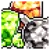 Mainframe Jewel |
무작위 실험실 보석 제공 (World 4) | 450 | A | 쉬운 메인프레임 보석을 획득한 후에만, 이미 보유하지 않은 보석은 받을 수 없으므로 Black Diamond 보석 잠금 해제에 사용하세요. |
| Shroom Familiar | 모든 에센스 획득 보너스 (World 6) | 800–940, 총 2,610 (3개) | A | 처음에 1개 구매하고 선호도에 따라 추가하세요. Summoning에는 엄청난 계정 부스트가 있으며, 이것이 빨리 달성하는 데 도움이 되고 끝없는 메커니즘이므로 항상 유용합니다. |
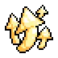 Legend Talent Pts |
레전드 탤런트 포인트 +1 (World 7) | 750–910, 총 4,150 (5개) | A | World 7의 Whallamus에서 강력한 레전드 탤런트를 더 많이 최대로 올리는 데 유용합니다. 캐릭터 레벨에서 레전드 탤런트를 쓴 후 계정에 가치 있는 구매가 있다고 생각될 때 추가하세요. |
| Storage Chest Space | 추가 창고 슬롯 (Inventory & Storage) | 175–450, 총 3,750 (12개) | A | 추가 창고 공간이 필요할 때마다 구매하세요. |
| Carry Capacity | 구매당 운반 용량 +25% (Inventory & Storage) | 150–375, 총 2,625 (10개) | A | 배낭 공간과 마찬가지로 AFK 획득을 확장하며 높은 스탬프 레벨에도 필요합니다. |
| More Sample Spaces | 3D Printer의 추가 샘플 공간 잠금 해제 (World 3) | 275–775, 총 1,450 (6개) | B | 샘플링하고 싶은 자원이 많으므로 편의를 위해 1~2개를 권장하며, 선호도에 따라 더 많거나 적게 구매하세요. |
| Golden Sprinkler | 스프링클러 충전 미소모 확률 (World 5) | 400–625, 총 2,050 (4개) | B | 첫 번째 구매만 하면 충전 미소모 확률이 생기고 스프링클러를 잠금 해제하여 Gaming에 큰 도약을 줍니다. |
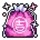 Pristine Charm |
잠입 인벤토리에 무작위 Pristine Charm 제공 (World 6) | 920 | B | 상당한 계정 부스트를 제공하지만 젬 없이도 찾을 수 있습니다. Gem Shop에서는 중복을 얻을 수 없으므로 유용한 Pristine Charms가 몇 개 남지 않았을 때 구매하세요. 잠입 스킬로 이미 강력한 것을 자연스럽게 얻었다면 건너뛰세요. |
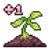 Plot of Land |
작물용 추가 땅 구획 (World 6) | 420–860, 총 7,680 (12개) | B | 처음에 2개 구매하여 파밍 진행을 가속하고 선호도에 따라 추가하세요. 업적을 위해 총 27개의 땅 구획이 필요하며, 20개는 젬 없이 W6에서 구매 가능합니다. |
| Instagrow Generator | 매일 인스타그로우 제공 및 추가 작물 확률 (World 6) | 610–960, 총 6,280 (8개) | B | 처음에 1개 구매하면 매일 축적되는 인스타그로우가 생기고, 선호도에 따라 추가하세요. |
| Professional Papers | 구매당 리서치 AFK 획득 영구 +2% (World 7, 최대 100%) | 350–650, 총 5,000 (10개) | B | Idleon을 자주 열지 않는다면 리서치 획득에 상당한 증가가 됩니다. 리서치는 강력한 메커니즘이 많지만, Active(직접 플레이)로 자주 접속한다면 가치가 줄어드므로 자신의 스타일을 고려하세요. |
| Bling Bags | 스펠렁킹 오브젝트가 이제 해당 탐험 중 호박(amber) 획득을 높이는 Bling Bags를 드롭 (World 7) | 490, 총 3,920 (8개) | B | 한 번의 구매로 스펠렁킹 최대 호박 잠재력이 크게 높아지며, 선호도에 따라 추가하세요. |
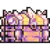 More Storage Space |
추가 창고 슬롯 (Inventory & Storage) | 450–558, 총 5,040 (10개) | B | 추가 창고 공간이 필요할 때마다 구매하세요. |
| Zen Cogs | 건설 속도를 높이는 강력한 톱니바퀴 제공 (World 3) | 500–1,375, 총 7,500 (8개) | C | 모두 잠금 해제하기에 비싸지만 건설 속도를 크게 높여 건설 혜택에 접근하는 시간을 단축합니다. |
| Tower Building Slots | 건설에서 추가 빌딩 슬롯 잠금 해제 (World 3) | 350–650, 총 2,000 (4개) | C | World 3 건설은 많은 계정 전반의 혜택과 숭배 같은 다른 메커니즘을 향상시킵니다. 추가 슬롯은 이 버프들을 잠금 해제하고 업그레이드하는 속도를 높입니다. |
| Souped Up Tube | 두 캐릭터의 실험실 경험치 및 라인 너비 증가 (World 4) | 480–740, 총 3,050 (5개) | C | 초반 실험실 병목을 추가 경험치와 라인 너비로 극복하는 데 도움이 됩니다. 예산에 따라 1~3개 구매하세요. |
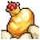 Royal Egg Cap |
브리딩 최대 알 수 증가 및 새 펫 브리딩 확률 추가 (World 4) | 350–550, 총 2,250 (5개) | C | 추가 알은 경험치, Dead DNA 및 새 펫 확률을 제공합니다. |
| Lava Sprouts | 정원에 추가 Gaming 새싹 (World 5) | 310–660, 총 2,910 (6개) | C | 모든 정원 수확에 더 많은 새싹이 생겨 Gaming 진행이 향상됩니다. World 5 업적을 위해 최소 1개 구매가 필요합니다. |
| Davey Jones Training | 보트 이동 속도, 전리품 가치, 유물 발견 확률, 선장 EXP 증가. 최소 이동 시간도 감소. | 450–520, 총 3,880 (8개) | C | 다양한 유물 티어 획득 과정을 가속하지만 시간이 지나면 모두 얻을 수 있으므로 선호도와 젬 잔액을 고려하세요. |
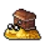 Chest Sluggo |
항해 루트 더미 최대 상자 수 증가 (World 5) | 250–690, 총 5,640 (12개) | C | Sailing에는 많은 혜택이 있으며 AFK 시 더 많은 상자를 저장하여 중요한 유물 획득을 쉽게 합니다. 3~4개가 좋은 비용 대비 효과의 균형을 제공하며, 예산에 따라 추가하세요. |
| Divinity Sparkie | Divinity 포인트 및 경험치 +25% (World 5) | 250–500, 총 2,250 | C | 경험치 획득이 Divinity 제단 밖에서도 가능한 레벨 40 달성을 위한 초반 신성력 그라인드를 극복합니다. 더 높은 신성력 레벨 획득에도 유용하여 마이너 링크 보너스를 강화합니다. |
| Gallery Showcases | 갤러리 슬롯 +1 (World 7) | 690–790, 총 4,450 (6개) | C | 현재 Idleon에서 가장 강력한 트로피에 필요한 갤러리 슬롯은 다른 출처에서 충분히 확보 가능합니다. 이 구매를 통해 가장 강한 트로피를 위한 추가 슈퍼부스트 슬롯을 얻어 소폭의 부스트를 얻을 수 있습니다. |
| Super Auto Mode | 스펠렁킹 자동 모드에 추가 속도 및 2x POW 제공 (World 7) | 580–700, 총 2,560 (4개) | C | 보스의 POW 요구사항 달성 시간을 단축하고 전반적인 스펠렁킹 진행을 가속합니다. 선호도에 따라 구매하세요. |
| Parallel Villagers | The Caverns의 빌리저에게 영구 2x EXP 부스트 (Oddities) | 780 | C | 빌리저마다 따로 구매해야 하지만 이 World 5 메커니즘의 초반 진행에 부스트를 줍니다. Explorer가 추가 동굴 메커니즘을 더 빨리 잠금 해제하는 데 가장 유용하고, 그 다음으로 경험치가 항상 유용한 Student가 좋습니다. 다른 빌리저는 시간이 지나면 쉽게 최대로 올릴 수 있으므로 건너뛰세요. |
| 4 Star Cardifier | 카드 별 3개를 4개로 업그레이드 (Cards) | 325 | C | 강력한 보스 카드와 같이 파밍하기 어려운 카드에 유용하며, 한정 스페셜 상점에 나타나는 5스타 카드파이어와 결합하세요. |
| Daily Teleports | 매일 텔레포트 +13 (Dailies N' Resets) | 120–480, 총 3,000 (10개) | C | 정기적으로 캐릭터를 월드 간 이동해야 하는 초반에 유용하지만, 나중에는 덜 중요합니다. 텔레포트가 정기적으로 부족하다면 선호도에 따라 구매하세요. |
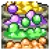 Ivory Bubble Cauldrons |
컬러 가마에 추가 플레이어 배정. 양조 및 버블 확률 부스트 (World 2) | 300–450, 총 1,500 (4개) | D | 연금술 버블에 더 빨리 접근할 수 있지만 각 색깔별로 개별 구매해야 합니다. 일반적으로 연금술에 쓸 자원이 부족해서 느려지므로 낮은 우선순위입니다. |
| Fenceyard Space | 추가 Fenceyard 슬롯 2개 잠금 해제 (World 4) | 275–500, 총 2,325 (6개) | D | 새 펫 잠금 해제를 위한 브리더빌리티에 도움이 되고 장기적으로 반짝이 펫 레벨 속도를 높입니다. 강한 반짝이 펫 보너스는 소수에 불과하며 시간이 지나면 Active Hunter 플레이로 빠르게 달성됩니다. |
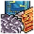 Console Chip |
무작위 콘솔 칩 제공 (World 4) | 385 | D | 매우 강력한 칩이 있으며 이를 통해 수개월이 걸릴 수 있는 정기 로테이션을 건너뛸 수 있습니다. 하지만 22가지 가능성이 있으므로 원하는 것을 얻을 확률이 높지 않습니다. |
| Opal | 빌리저용 오팔 +1 (Oddities) | 250 | D | World 5에 처음 도달했을 때 초반 오팔 부족을 극복하는 데 유용하지만 결국에는 불필요해집니다. |
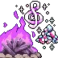 Resource Boost |
The Well과 The Harp Caverns에서 수집한 자원 부스트 (Oddities) | 420, 총 4,335 (15개) | D | 2번의 구매로 이 동굴의 자원을 두 배로 늘려 초반 진행에 상당한 부스트를 줍니다. 하지만 이 자원의 유용성이 시간이 지남에 따라 감소하므로 추가 구매는 불필요합니다. |
| Card Presets | 모든 캐릭터의 추가 카드 프리셋 잠금 해제 (Inventory & Storage) | 250–890, 총 2,850 (5개) | D | 한 번 구매하면 Active, AFK, 스킬 카드 프리셋을 갖출 수 있는 편의 업그레이드입니다. 불필요하므로 두 번 이상 구매하지 마세요. |
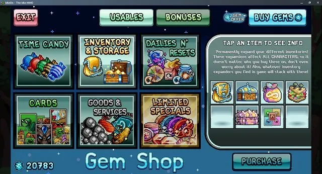
Gem Shop 티어 리스트 — 한정 스페셜
Gem Shop의 한정 스페셜 섹션은 고유한 효과를 가진 아이템의 순환 풀입니다. 이 아이템들은 진행 정도에 크게 의존하며 진정으로 엔드게임 플레이어 최적화를 위한 것이므로, 최선의 구매는 계정마다 다릅니다. 각 월드의 핵심 젬 상점 아이템을 보유한 후에만 고려하세요. 아래는 등장 시 강력히 구매를 고려해야 할 항목들입니다.
| 아이템 | 효과 | 젬 비용 | 등급 | 비고 |
|---|---|---|---|---|
| Dragonic Cauldron | 액체 용량 2배 및 생성 1.3배. 가마마다 개별 구매. | 969 | S | 레이트 게임 연금술에 큰 부스트를 주어 일일 연금술 업그레이드를 위한 중요한 액체를 생성하고 저장할 수 있습니다. |
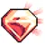 5 Card |
카드 별 4개를 5개로 업그레이드 | 약 500 | S | 보스 카드와 같이 파밍하기 어려운 카드를 적당한 시간 안에 5스타로 올리는 유일한 방법입니다. |
| Drop Rate Keychains | 드롭률 15% 키체인 | — | S | 최고 드롭률 키체인으로, DR 스탯 최대화에 중요합니다. |
| Respawn Keychains | 몬스터 리스폰 20% 키체인 | — | S | 몬스터 리스폰에 큰 부스트를 주어 AFK 획득을 최적화합니다. |
| Super Tier Ribbon | 10~15티어 사이의 무작위 리본 제공 | 490 | A | 최고 음식 식사(Yumi Peachring)를 위해 하나 구매하면 계정 전반에 걸쳐 큰 이득을 주고 수개월의 리본 파밍을 건너뜁니다. |
| Exalted Stamps | 스탬프를 Exalted Stamp으로 전환하여 보너스 2배. | 535 | A | 잠금 해제 및 레벨업이 완료된 후 강력한 스탬프 보너스를 두 배로 늘립니다. |
| Balling Nametag | 드롭 확률 40% | 2,000 | B | 이벤트를 제외한 가장 좋은 드롭률 네임태그로 DR 최적화에 도움이 됩니다. |
| Siege Captain Cap | 드롭 확률 10% | — | B | 일반 방어구 모자 위에 장착할 수 있는 프리미엄 모자로 드롭률 부스트를 줍니다. |
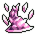 Master Class Hats |
Death Bringer, Wind Walker, Arcane Cultist의 자원 획득 25% 추가 | 890 | B | 마스터 클래스 진행을 가속하여 강력한 계정 보너스에 더 빨리 도달합니다. |
| Random Hyper Obol | 드롭률 4% 또는 모든 스탯 2% 또는 데미지 3% 또는 티어당 멀티킬 2%의 Hyper Obol | 475 | C | 레이트 게임 오볼 최적화를 위해 이 드롭률 오볼이 필요하지만 세트를 완성하기에는 확률상 비용이 많이 듭니다. |
| Killer Rings | 특정 월드에서 처치 수 1.3배 | 810 | C | 월드를 더 빠르게 진행하고 데스노트 파밍에 도움이 됩니다. Voidwalker 스피드런 최적화에도 도움이 됩니다. 나중 월드일수록 진행이 느려지는 곳이므로 더 가치 있습니다. |